Geometria Plana
Conceitos, fórmulas e aplicações no Ensino Médio
1. Introdução
A Geometria Plana é a área da Matemática que estuda figuras bidimensionais, ou seja, formas que possuem apenas comprimento e largura. Seu objetivo é analisar propriedades, relações e medidas dessas figuras, possibilitando o cálculo de área, perímetro e ângulos.
O domínio desse conteúdo é essencial para a resolução de problemas matemáticos que envolvem interpretação de figuras e aplicação direta de fórmulas. No Ensino Médio e em avaliações como o ENEM, a Geometria Plana é frequentemente explorada por meio de situações que exigem análise lógica, precisão nos cálculos e compreensão das propriedades das formas geométricas.
Neste módulo, você estudará a origem da Geometria Plana, os conceitos fundamentais, as principais fórmulas, aplicações práticas no cotidiano, exemplos resolvidos, erros comuns e como esse conteúdo é cobrado no ENEM.
2. História de Origem
▼A Geometria Plana surgiu da necessidade prática de medir terras, construir edificações e organizar espaços. Registros históricos indicam que civilizações antigas já utilizavam conhecimentos geométricos para resolver problemas relacionados à agricultura, construção e divisão de propriedades.
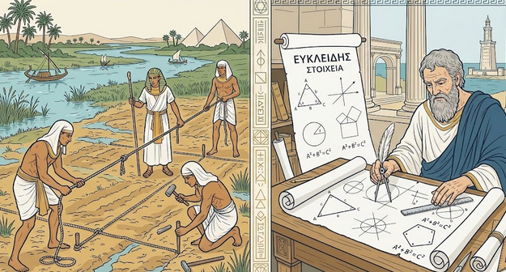
No Egito Antigo, por exemplo, técnicas geométricas eram aplicadas para redefinir limites de terrenos após as cheias do rio Nilo. Já na Grécia Antiga, a Geometria passou a ser estudada de forma mais teórica e organizada, transformando-se em um campo estruturado do conhecimento matemático.
Um dos grandes responsáveis por essa organização foi Euclides de Alexandria, que sistematizou os conhecimentos geométricos em uma obra composta por definições, postulados e demonstrações lógicas. Esse modelo de organização influenciou o ensino da Matemática por séculos.
A partir desse desenvolvimento histórico, a Geometria Plana consolidou-se como uma área fundamental da Matemática, sendo hoje parte essencial do currículo escolar e base para diversas aplicações científicas e tecnológicas.
3. Conceitos Fundamentais
▼Para compreender e aplicar corretamente as fórmulas da Geometria Plana, é necessário dominar seus conceitos básicos. Esses elementos formam a base para o estudo das figuras geométricas e seus cálculos.
Ponto
O ponto indica uma posição no plano. Ele não possui dimensão, representando apenas uma localização.
- Representado por letras maiúsculas (A, B, C...).
- Não possui comprimento nem largura.
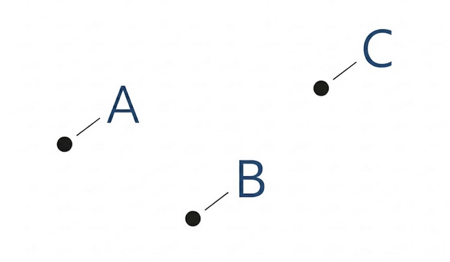
Reta
A reta é formada por infinitos pontos alinhados. Ela se estende indefinidamente em ambos os sentidos.
- Não possui início nem fim.
- Possui apenas comprimento.
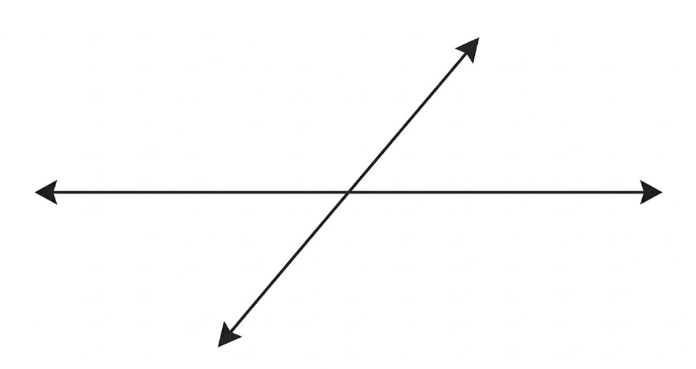
Semirreta
A semirreta é parte de uma reta que possui um ponto de origem e se prolonga infinitamente em apenas um sentido.
- Possui início.
- Não possui fim.
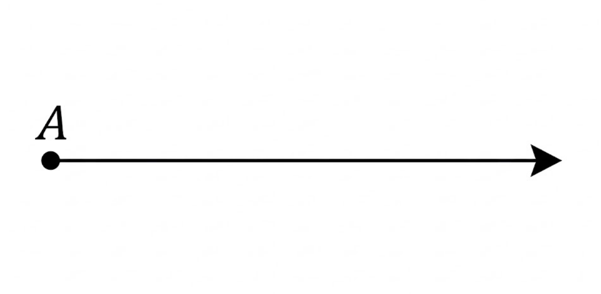
Segmento de Reta
O segmento de reta é a parte da reta limitada por dois pontos.
- Possui início e fim.
- Tem comprimento definido.
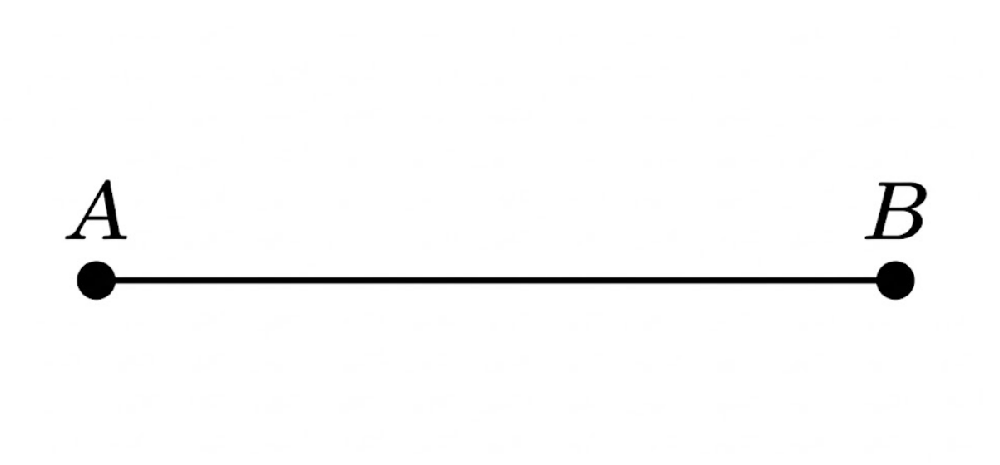
Ângulos
O ângulo é a região formada pelo encontro de duas semirretas que possuem a mesma origem.
A medida do ângulo é expressa em graus (°).
- Ângulo agudo: menor que 90°
- Ângulo reto: exatamente 90°
- Ângulo obtuso: maior que 90° e menor que 180°
- Ângulo raso: exatamente 180°
- Ângulo completo: 360°
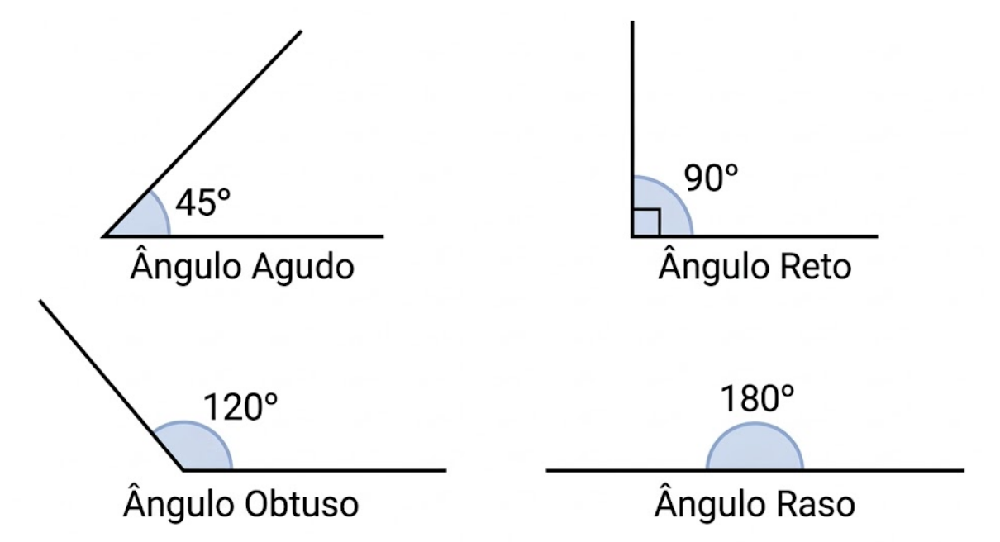
Plano
O plano é uma superfície ilimitada onde as figuras da Geometria Plana são representadas.
- Possui duas dimensões: comprimento e largura.
- Contém infinitos pontos e retas.
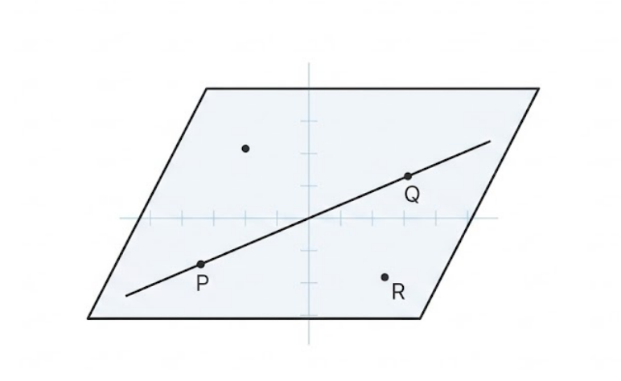
4. Figuras e Fórmulas da Geometria Plana
▼As fórmulas da Geometria Plana são utilizadas para calcular principalmente área (medida da superfície interna de uma figura) e perímetro (soma de todos os lados da figura). A compreensão do significado de cada fórmula é essencial para aplicá-las corretamente.
Quadrado
O quadrado possui quatro lados iguais e quatro ângulos retos.
Área: A = l²
A área é calculada multiplicando o lado por ele mesmo, pois todos os lados possuem a mesma medida. O valor l² representa lado × lado.
Perímetro: P = 4l
O perímetro corresponde à soma dos quatro lados iguais.
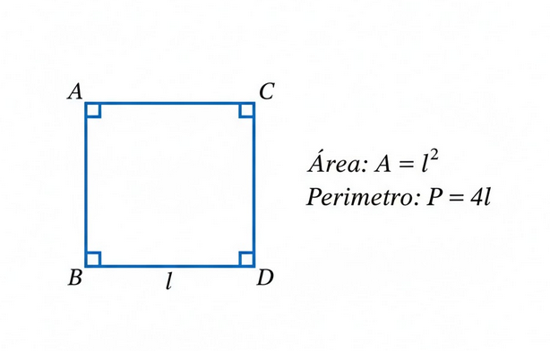
Retângulo
O retângulo possui lados opostos paralelos e ângulos de 90°.
Área: A = b × h
A área é obtida multiplicando a base pela altura, pois o retângulo pode ser interpretado como várias unidades organizadas em linhas e colunas.
Perímetro: P = 2(b + h)
O perímetro é a soma de todos os lados, considerando que a base e a altura aparecem duas vezes.
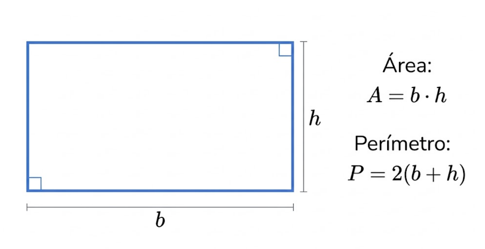
Triângulo
O triângulo é uma figura formada por três lados.
Área: A = b × h2
A área do triângulo é metade da área de um retângulo que teria a mesma base e altura. Por isso, dividimos o produto da base pela altura por 2.
Perímetro: P = a + b + c
O perímetro é obtido somando as medidas dos três lados.
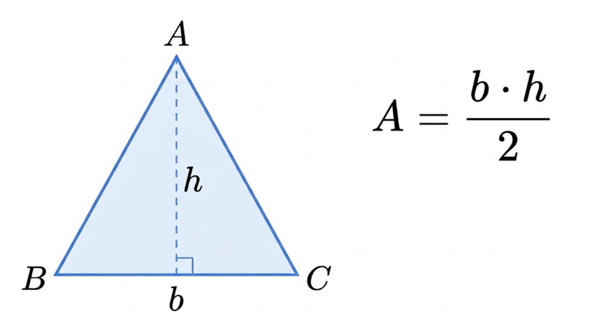
Paralelogramo
O paralelogramo possui lados opostos paralelos e congruentes.
Área: A = b × h
Apesar de possuir lados inclinados, sua área é calculada da mesma forma que a do retângulo, pois pode ser reorganizado visualmente em um retângulo equivalente.
Perímetro: P = 2(a + b)
Soma-se os dois pares de lados opostos.
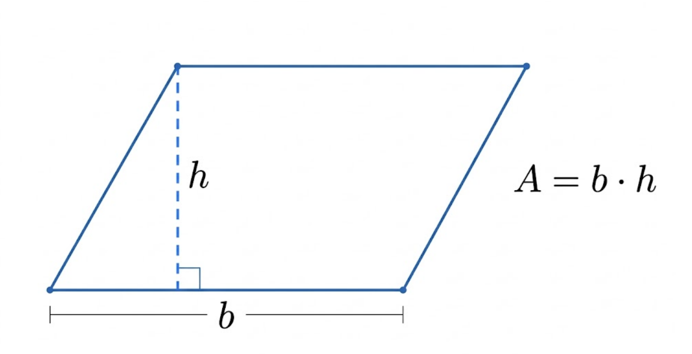
Losango
O losango é um quadrilátero com quatro lados iguais.
Área: A = D × d2
A área é calculada multiplicando as diagonais e dividindo por 2, pois as diagonais dividem o losango em quatro triângulos congruentes.
Perímetro: P = 4l
Como todos os lados são iguais, basta multiplicar o lado por 4.
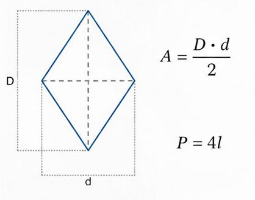
Trapézio
O trapézio é um quadrilátero que possui apenas um par de lados paralelos.
Área: A = (B + b) × h2
A área é obtida pela média das duas bases multiplicada pela altura. Isso ocorre porque o trapézio pode ser reorganizado formando um paralelogramo equivalente.
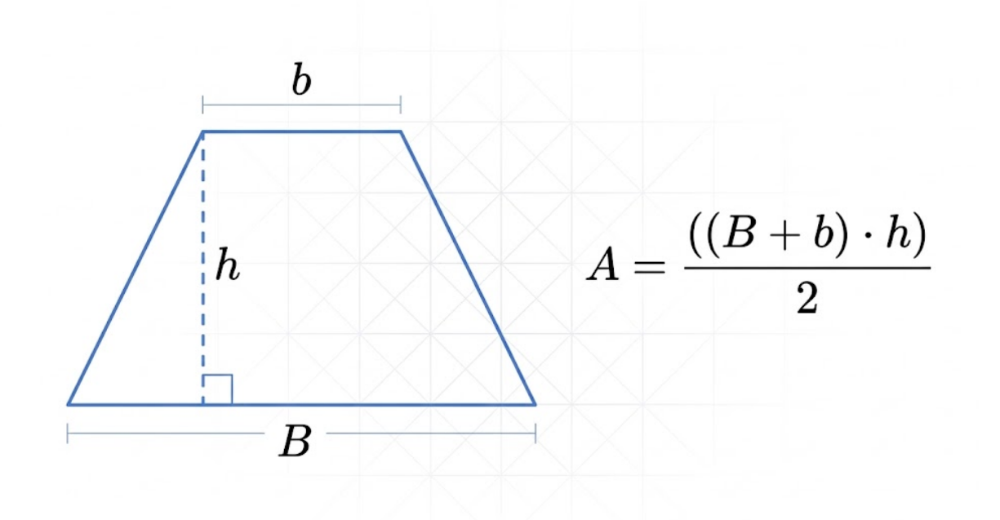
Circunferência e Círculo
O círculo é a região interna delimitada por uma circunferência. A circunferência representa apenas o contorno da figura, enquanto o círculo corresponde à área interna limitada por esse contorno.
Comprimento da circunferência: C = 2πr
Essa fórmula calcula o tamanho do contorno do círculo. O valor π representa a razão constante entre o comprimento da circunferência e seu diâmetro.
Área do círculo: A = πr²
A área depende do raio ao quadrado, pois quanto maior o raio, maior será a superfície interna da figura.
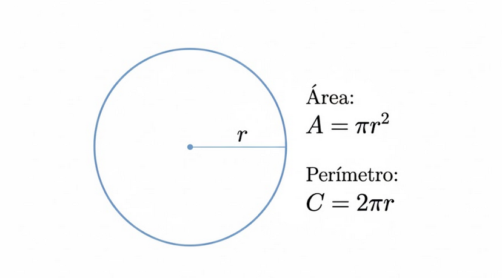
Compreensão Matemática: Crescimento Linear e Quadrático
Ao estudar fórmulas de área e perímetro, é importante compreender como essas grandezas variam quando as dimensões da figura aumentam. Esse tipo de leitura ajuda a interpretar gráficos, tabelas e situações de escala em questões do ENEM.
Considere um quadrado de lado l. As expressões são:
Perímetro: P = 4l
Área: A = l²
Observe os valores para alguns lados:
| Lado (l) | Perímetro P = 4l | Área A = l² |
|---|---|---|
| 2 | 8 | 4 |
| 3 | 12 | 9 |
| 4 | 16 | 16 |
| 5 | 20 | 25 |
| 6 | 24 | 36 |
Gráfico de Crescimento
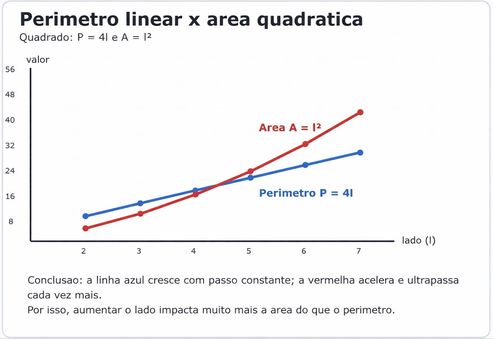
- Crescimento linear: quando l aumenta 1 unidade, o perímetro aumenta sempre 4 unidades.
- Crescimento quadrático: os acréscimos da área aumentam progressivamente (de 4 para 9, depois 16, 25, 36...).
Por isso, dobrar o lado de um quadrado não dobra a área: ela cresce mais rapidamente.
Esse conceito é fundamental em projetos arquitetônicos, escalas, engenharia e também em questões do ENEM, onde é necessário interpretar o comportamento das grandezas e não apenas aplicar fórmulas.
5. Aplicações da Geometria: Cartografia e Projeções
▼A Terra possui forma aproximadamente esférica. Como não é possível planificar uma esfera sem deformações, utilizam-se projeções cartográficas para representar a superfície curva do planeta em um plano.
Essas projeções são construídas a partir de superfícies geométricas auxiliares, como cilindros, cones ou planos, sobre as quais os pontos da Terra são projetados.
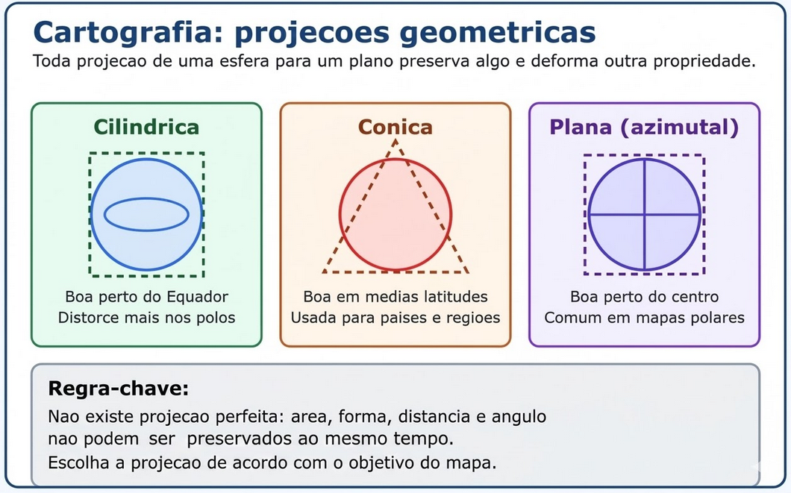
Projeção Cilíndrica
Imagina-se um cilindro envolvendo a Terra. Os pontos do globo são projetados sobre essa superfície, que depois é aberta e transformada em um plano.
Preserva melhor as regiões próximas à Linha do Equador, mas distorce significativamente as áreas próximas aos polos.
Um exemplo clássico é a projeção de Mercator, muito utilizada na navegação por preservar direções locais.
Projeção Cônica
Utiliza-se um cone apoiado sobre parte da superfície terrestre. Após projetar os pontos sobre o cone, ele é aberto, formando o mapa plano.
Apresenta menor deformação em médias latitudes, sendo comum na representação de países ou continentes.
Projeção Plana (Azimutal)
A projeção é feita sobre um plano tangente à Terra em um ponto específico.
É bastante utilizada para representar regiões polares. Quanto maior a distância do ponto central, maior a deformação.
Limitações das Projeções
Nenhuma projeção consegue preservar simultaneamente:
- Área
- Forma
- Distância
- Ângulos
Sempre haverá algum tipo de distorção, pois estamos transformando uma superfície curva (esférica) em uma superfície plana.
Esse estudo relaciona Geometria Plana com Geografia e aparece frequentemente no ENEM em questões comparativas entre mapas.
6. Teorema de Pitágoras
▼O Teorema de Pitágoras é uma relação matemática válida apenas para triângulos retângulos. Ele estabelece uma relação entre o comprimento da hipotenusa e o comprimento dos catetos. Ele conecta os três lados da figura e permite descobrir uma medida desconhecida quando as outras duas são conhecidas.
Sempre identifique primeiro o ângulo de 90°. O lado oposto a esse ângulo é a hipotenusa; os outros dois lados são os catetos.
Fórmula: c2 = a2 + b2
- Hipotenusa: lado oposto ao ângulo de 90° (maior lado).
- Catetos: lados que formam o ângulo reto.
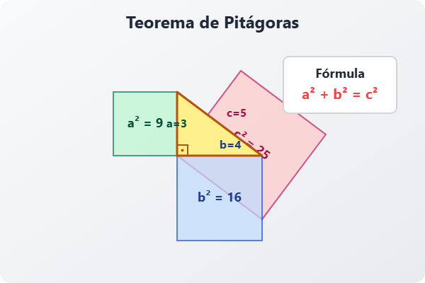
Exemplo guiado: em um triângulo com catetos 6 e 8, temos:
a2 = 62 + 82 = 36 + 64 = 100 → a = 10.
Dica prática: antes de finalizar, confira se a hipotenusa ficou maior que cada cateto. Esse é um bom teste rápido para validar o resultado.
7. Classificação de Triângulos
▼A classificação de triângulos pode ser feita pelos lados e pelos ângulos. Esse conhecimento é base para problemas de congruência, semelhança e trigonometria.
Em qualquer triângulo, a soma dos ângulos internos é sempre 180°. Essa propriedade ajuda a confirmar classificações e resolver questões com dados incompletos.
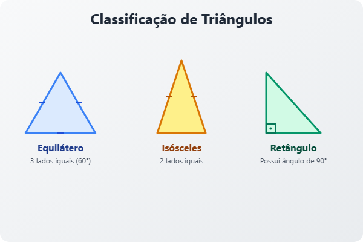
Quanto aos lados
- Equilátero: três lados iguais.
- Isósceles: dois lados iguais.
- Escaleno: três lados diferentes.
Quanto aos ângulos
- Acutângulo: três ângulos agudos.
- Retângulo: um ângulo de 90°.
- Obtusângulo: um ângulo maior que 90°.
Semelhança entre triângulos
Dois triângulos são semelhantes quando possuem ângulos correspondentes iguais e lados proporcionais. Essa relação garante que os triângulos têm a mesma forma, mesmo que tenham tamanhos diferentes.
Os principais critérios para verificar a semelhança são: AA (ângulo-ângulo), LAL (lado-ângulo-lado) e LLL (lado-lado-lado).
Se a razão de semelhança é k, então os perímetros variam por k e as áreas variam por k2. Esse conceito é muito utilizado em escalas, mapas e medições indiretas.
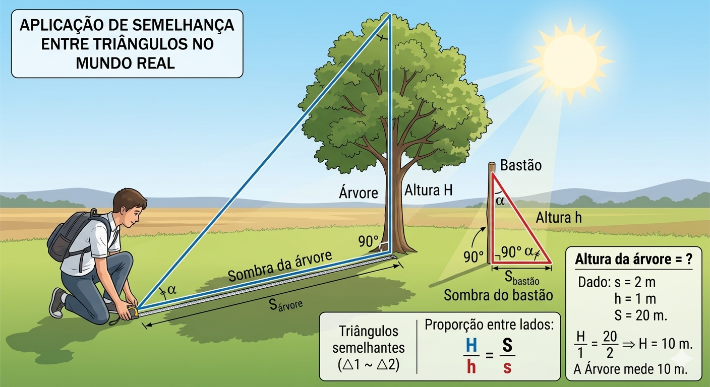
Na figura acima, podemos observar dois triângulos com a mesma forma geométrica, indicando que os lados correspondentes mantêm sempre a mesma proporção.
Fórmula da semelhança (lados correspondentes):
A'B'AB = B'C'BC = A'C'AC = k
Nessa expressão, cada fração compara lados correspondentes entre dois triângulos semelhantes. O valor k representa a constante de proporcionalidade.
Interpretação prática: se k > 1, o triângulo é uma ampliação do original; se 0 < k < 1, trata-se de uma redução.
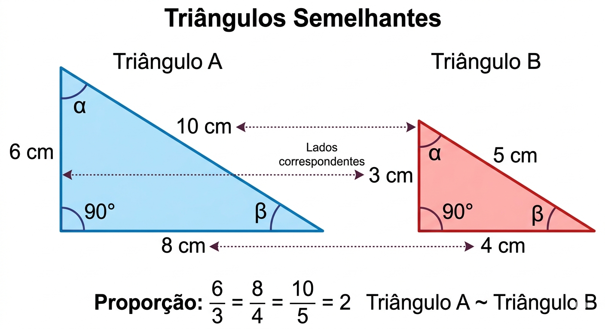
Exemplo aplicado:
Considere dois triângulos semelhantes em que AB = 6, BC = 8, AC = 10 e A'B' = 9, B'C' = 12, A'C' = 15.
A'B'AB = 96 = 32 ; B'C'BC = 128 = 32 ; A'C'AC = 1510 = 32.
Portanto, a constante de proporcionalidade é k = 3/2 = 1,5. Isso significa que cada lado do segundo triângulo mede 1,5 vezes o lado correspondente do primeiro.
8. Transformações Geométricas
▼As transformações geométricas permitem modificar a posição, orientação ou tamanho de uma figura no plano, mantendo ou alterando suas propriedades. Elas são fundamentais para compreender simetria, escalas e construções.
Transformações Isométricas
São transformações que preservam forma e tamanho da figura.
- Translação: deslocamento da figura sem girar ou deformar.
- Rotação: giro da figura em torno de um ponto.
- Reflexão: espelhamento em relação a uma reta.
Essas transformações são usadas em arquitetura, design gráfico, logotipos e padrões decorativos.
Transformações Homotéticas (Ampliação e Redução)
Quando uma figura é ampliada ou reduzida mantendo a forma, ocorre uma transformação chamada homotetia.
Se a razão de escala é k:
- O perímetro é multiplicado por k.
- A área é multiplicada por k².
Esse conceito é amplamente aplicado em mapas, maquetes e projetos técnicos.
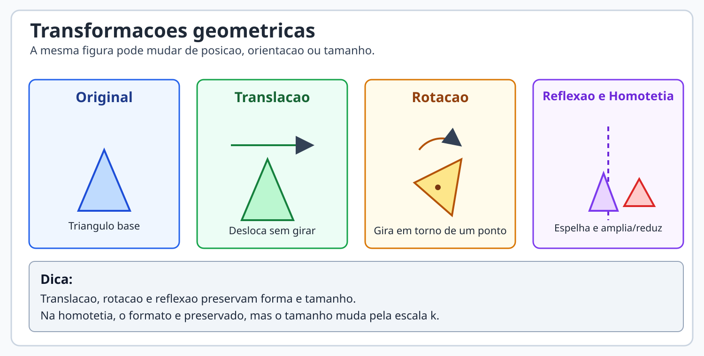
9. Ladrilhamento do Plano
▼O ladrilhamento do plano ocorre quando figuras geométricas são organizadas de forma que cubram completamente uma superfície, sem sobreposições e sem deixar espaços vazios.
Polígonos que Ladrilham o Plano Sozinhos
- Triângulos
- Quadrados
- Hexágonos regulares
Nem todos os polígonos conseguem ladrilhar o plano sozinhos. Para isso, a soma dos ângulos ao redor de um ponto deve ser 360°.
Esse conceito é aplicado em pisos, azulejos, mosaicos e construções arquitetônicas.
No ENEM, esse conteúdo pode aparecer em problemas envolvendo revestimento de superfícies ou padrões geométricos.
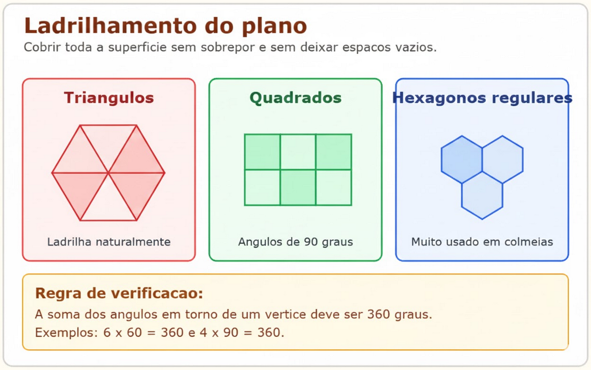
10. Exemplos na Prática
▼A seguir, são apresentados exemplos práticos que demonstram a aplicação dos principais conceitos da Geometria Plana em diferentes situações.
Cálculo de Área – Piso de uma Sala
Uma sala possui formato retangular, com 8 metros de comprimento e 5 metros de largura. Deseja-se calcular a área total do piso.
Fórmula da área do retângulo:
A = b · h
Substituindo os valores:
A = 8 · 5
A = 40 m²
A área total do piso é de 40 metros quadrados.
Cálculo de Perímetro – Instalação de Cerca
Um terreno possui formato retangular com 20 metros de comprimento e 12 metros de largura. O proprietário deseja cercar todo o terreno. Quantos metros de cerca serão necessários?
Fórmula do perímetro do retângulo:
P = 2(b + h)
Substituindo:
P = 2(20 + 12)
P = 2(32)
P = 64 m
Serão necessários 64 metros de cerca.
Teorema de Pitágoras – Comprimento de uma Escada
Uma escada está apoiada em uma parede. A base da escada está a 3 metros da parede, e a altura alcançada é de 4 metros. Qual é o comprimento da escada?
Teorema de Pitágoras:
a² = b² + c²
Substituindo os valores:
a² = 3² + 4²
a² = 9 + 16
a² = 25
a = √25
a = 5 m
O comprimento da escada é de 5 metros.
Cálculo de Ângulos – Soma dos Ângulos Internos
Um terreno possui formato triangular. Dois de seus ângulos medem 50° e 60°. Qual é a medida do terceiro ângulo?
Soma dos ângulos internos de um triângulo:
Â₁ + Â₂ + Â₃ = 180°
Substituindo:
50° + 60° + x = 180°
110° + x = 180°
x = 180° − 110°
x = 70°
O terceiro ângulo mede 70°.
Situação Combinada – Planejamento de Jardim
Um jardim retangular mede 10 metros de comprimento e 6 metros de largura. No centro do jardim será construída uma passarela diagonal ligando dois cantos opostos.
Determine:
a) A área total do jardim.
b) O comprimento da passarela diagonal.
a) Área:
A = 10 · 6
A = 60 m²
b) Diagonal (Teorema de Pitágoras):
d² = 10² + 6²
d² = 100 + 36
d² = 136
d = √136
d ≈ 11,66 m
A área do jardim é 60 m² e a diagonal mede aproximadamente 11,66 metros.
11. Onde Aplicar
▼A Geometria Plana está presente em diversas situações do cotidiano. Seus conceitos são utilizados para medir espaços, calcular áreas, determinar perímetros e analisar formas em diferentes contextos profissionais e pessoais.
Construção Civil e Arquitetura
Na construção de casas, prédios e estruturas, é necessário calcular áreas de pisos, paredes e terrenos. Formas como retângulos, quadrados e triângulos são frequentemente utilizadas nos projetos arquitetônicos.
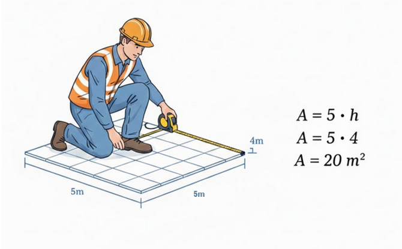
O cálculo da área permite determinar a quantidade de materiais necessários, como pisos, tintas e revestimentos.
Design e Engenharia
Profissionais de design gráfico, engenharia e desenho técnico utilizam figuras geométricas para criar projetos, logotipos, embalagens e peças estruturais. A precisão nas medidas e nos ângulos é essencial para garantir qualidade e funcionalidade.
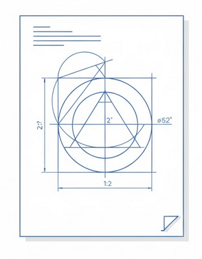
Agricultura e Organização de Terrenos
A Geometria é aplicada na divisão de terrenos, no cálculo de áreas de plantio e na instalação de cercas. Formas como trapézios e paralelogramos são comuns em áreas rurais e lotes irregulares.
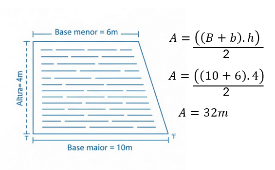
Situações do Cotidiano
No dia a dia, utilizamos a Geometria ao medir móveis, calcular o espaço disponível em um ambiente, determinar o tamanho de uma televisão ou planejar a disposição de objetos em um cômodo.
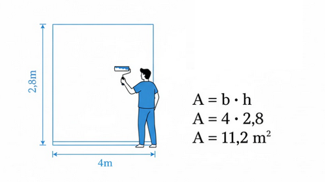
Dessa forma, a Geometria Plana não se limita ao ambiente escolar, mas constitui uma ferramenta prática e essencial para diversas áreas do conhecimento e da vida cotidiana.
12. Principais Erros e Dificuldades
▼Em Geometria Plana, muitos erros acontecem por distração na leitura ou escolha inadequada da fórmula. Identificar esses padrões ajuda a melhorar muito o desempenho.
- Confundir área com perímetro: área mede superfície (unidades quadradas) e perímetro mede contorno (unidades lineares).
- Usar fórmula incorreta: aplicar fórmula de triângulo em trapézio, ou esquecer que no círculo há uso de π.
- Ignorar unidades: somar cm com m sem conversão prévia.
- Erro na altura: em triângulos e trapézios, usar lado inclinado no lugar da altura perpendicular.
- Falta de interpretação: calcular corretamente, mas responder uma grandeza diferente da pedida.
- Arredondamento precoce: aproximar valores muito cedo e perder precisão no resultado final.
Estratégia de conferência (passo a passo):
- Identifique qual grandeza a questão pede (área, perímetro, ângulo, diagonal).
- Selecione a fórmula e destaque os dados no enunciado.
- Substitua valores com atenção às unidades.
- Valide o resultado: ordem de grandeza e unidade final.
- Escreva uma conclusão curta e objetiva.
Quanto mais organizado estiver o raciocínio, menor a chance de erro e maior a confiança para resolver exercícios mais complexos.
13. Para o Exame Nacional de Ensino Médio (ENEM)
▼No ENEM, Geometria Plana aparece em problemas contextualizados envolvendo plantas, pisos, mapas, rampas, embalagens e gráficos. A prova exige leitura atenta e escolha da estratégia adequada, e não apenas memorização de fórmulas.
Tópicos mais recorrentes:
- Áreas e perímetros de figuras planas (triângulo, retângulo, trapézio, círculo).
- Relações métricas em triângulos e Teorema de Pitágoras.
- Soma de ângulos internos/externos de polígonos.
- Semelhança de triângulos, proporcionalidade e escala.
Roteiro prático para resolver questões:
- Leia o comando final primeiro e destaque o que deve ser encontrado.
- Marque dados numéricos e unidades na figura/enunciado.
- Escolha a fórmula ou propriedade geométrica adequada.
- Resolva por etapas e mantenha a organização dos cálculos.
- Confira plausibilidade do resultado e unidade da resposta.
Dicas de estudo contínuo:
- Resolver questões variadas e explicar em voz alta a estratégia usada.
- Comparar diferentes formas de solução para o mesmo problema.
- Usar esquemas e desenhos para visualizar melhor os dados do enunciado.
- Montar um resumo com fórmulas, unidades e exemplos clássicos de aplicação.
14. Grade BNCC
▼Este conteúdo foi desenvolvido com base nas habilidades da Base Nacional Comum Curricular (BNCC), documento normativo do Ministério da Educação do Brasil, estando alinhado aos seguintes códigos do Ensino Médio:
Referência oficial:
Portal oficial navegável da BNCC:
https://basenacionalcomum.mec.gov.br/abase/
Versão completa em PDF:
https://basenacionalcomum.mec.gov.br/images/BNCC_EI_EF_110518_versaofinal_site.pdf?
 BrainForms
BrainForms
BrainForms - Calculadora de Fórmulas
Quer praticar com mais autonomia? A calculadora reúne os principais tópicos de Geometria Plana, com resultados rápidos e resolução passo a passo para apoiar seu estudo.
Veja as Fórmulas de Geometria Plana na Prática
Experimente a Calculadora automática de Fórmulas do BrainForms
Com ela você pode calcular área, perímetro, semelhança de triângulos, Teorema de Pitágoras e muito mais, ainda tendo o passo a passo de todos os cálculos para ficar por dentro de como tudo funciona.